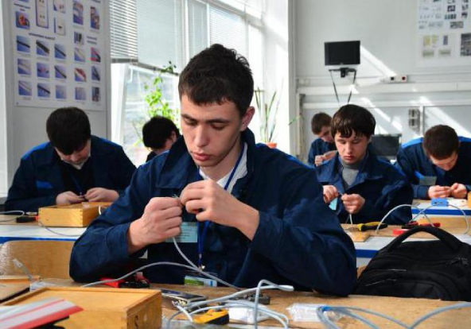
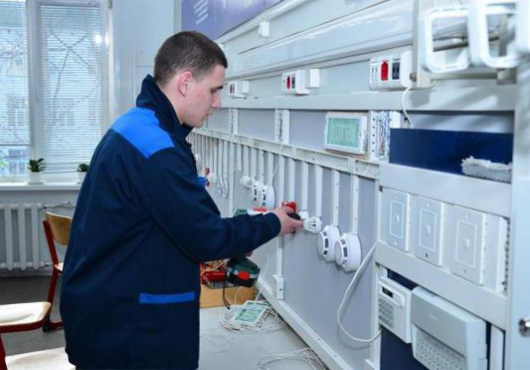

История колледжа
Данное образовательное учреждение начало свою работу еще в 1972 году на основании приказа Государственного комитета. Первые студенты постоянно участвовали в различных мероприятиях, посвященных государственным праздникам и памятным датам. Команда училища регулярно занимала призовые места в патриотической игре «Орленок».
30 колледж связи (Вологда) на протяжении нескольких десятков лет имеет свою собственную радиостанцию. Благодаряя ей студенты регулярно выигрывают в соревнованиях по радиоспорту.
Спустя несколько лет со дня своего открытия колледж связи (Вологда) обзавелся своими собственными мастерскими: кабельными, слесарными и для монтажа телефонной аппаратуры.
Выпускники колледжа всегда пользовались большой популярностью на многих предприятиях страны.

Общая информация
Многие выпускники колледжа успешно продолжают свое образование. Благодаря этому они совершенствуют все свои полученные умения и становятся победителями многих областных и республиканских конкурсов. Большинство выпускников, окончивших колледж связи (Вологда), после окончания своего обучения устраивается на работу в различные подразделения сетей связи. Практически все руководители «Почты России» являются выпускниками колледжа.
Имеет колледж связи (Вологда) официальный сайт. Он может предоставить каждому желающему всю исчерпывающую информацию о специальностях, стоимости и прочих важных моментах, касающихся обучения.